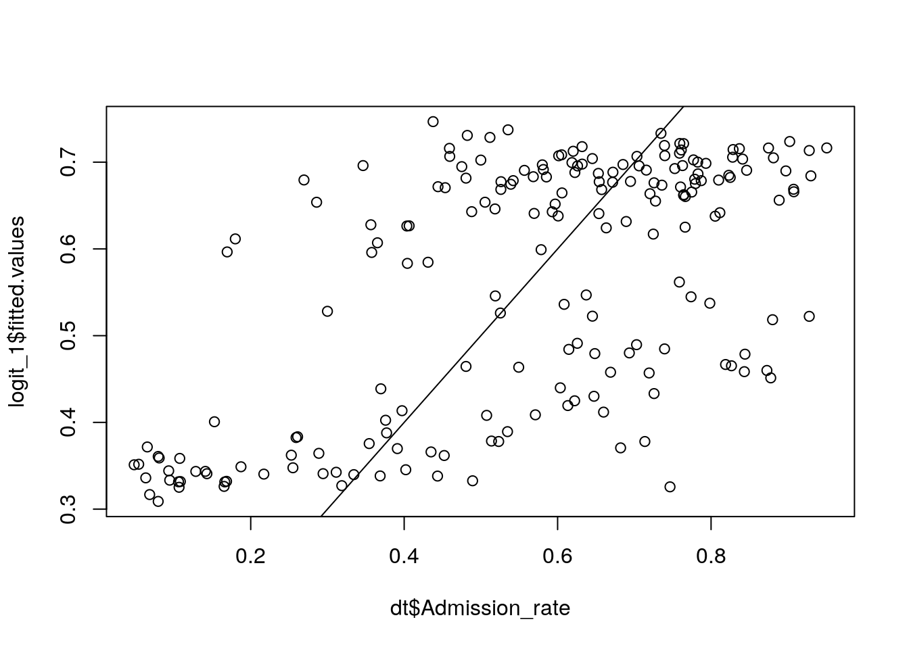

Lecture 11 Generalized linear models
11.1 Goal
Learn about Generalized Linear Models (GLMs), and be able to decide which model is most appropriate for the problem at hand.
Let’s load some packages:
library(tidyverse) # our friend the tidyverse
library(MASS) # negative binom regression11.2 Introduction
The linear regression we’ve explored during the past weeks attempts to estimate the expected value for response (dependent) variable \(Y\) given the predictors \(X\). It assumes that the response variable changes continuously, and that errors are normally distributed around the mean. In many cases, however:
- the response variable does not have support in the whole real line (e.g., binary, count, only positive values)
- the errors are not normally distributed (e.g., the response variable can take only positive values)
- the variance changes with the mean (heteroscedasticity)
In these cases, you can use Generalized Linear Models (GLMs) to fit the data. In the simplest form of GLMs,
- The response variable is modeled by a single-parameter distribution from the exponential family (Gaussian, Gamma, Binomial, Poisson, etc.)
- A link function linearizes the relationship between the fitted values and the predictors.
- Parameters are estimated through a least squares algorithm.
11.2.1 Model structure
In practice, we need to determine three parts of the model:
- Random component the entries of the response variable (\(Y\)) are assumed to be independently drawn from a certain distribution (e.g., Binomial)—typically a distribution that can be modeled using a single parameter.
- Systematic component the explanatory variables (\(X_1\), \(X_2\), \(\ldots\)) are combined linearly to form a linear predictor (e.g., \(\beta_0 + \beta_1 X_1 + \beta_2 X_2 + \ldots\)). The explanatory variables can be continuous, categorical, or mixed.
- Link function \(g(u)\) specifies how the random and systematic components are connected.
11.3 Binary data
The most extreme case of departure from normality is when the response variable can assume only values 0 or 1 (no/yes, survived/deceased, lost/won, etc.). A Bernoulli random variable can take values 0 or 1, and therefore provides the Random component of the model:
\[ P(Y_i = y_i | \pi_i) = \pi_i^{y_i} (1 - \pi_i)^{1 - y_i} \]
Saying that the probability \(P(Y_i = 1) = \pi_i\), and \(P(Y_i = 0) = 1 - \pi_i\). Now we want to relate the parameter \(\pi_i\) to the linear predictor (i.e., choose a link function). This can be accomplished in a number of ways.
11.3.1 Logistic regression
The most popular choice is to use the Logit function as the link function:
\[ \text{Logit}(\pi_i) = \beta_0 + \beta_1 x_i \]
where the function can be written as:
\[ \text{Logit}(\pi_i) = \log\left( \frac{\pi_i}{1 - \pi_i} \right) = \log(\pi_i) - \log(1 - \pi_i) \]
Practically, this means that
\[ \pi_i = \frac{e^{\beta_0 + \beta_1 x_i}}{1 + e^{\beta_0 + \beta_1 x_i}} = 1 - \frac{1}{1 + e^{\beta_0 + \beta_1 x_i}} \]
Clearly, when \(\beta_0 + \beta_1 x_i = 0\), the probability \(\pi_i = 1/2\), while the probability tends to 1 when \((\beta_0 + \beta_1 x_i) \to \infty\) and to zero when \((\beta_0 + \beta_1 x_i) \to -\infty\). :
# some random data
X <- rnorm(100)
beta_0 <- 0.35
beta_1 <- -3.2
linear_predictor <- beta_0 + beta_1 * X
predicted_pi_i <- exp(linear_predictor) / (1 + exp(linear_predictor))
ggplot(data = tibble(linear_predictor = linear_predictor, probability = predicted_pi_i)) +
aes(x = linear_predictor, y = probability) +
geom_point() + geom_line()
As you can see, this is a logistic curve, hence the name. The parameters \(\beta_0\) and \(\beta_1\) control the location of the inflection point and the steepness of the curve, allowing you to model binary response variables (and, with a slight abuse of the error structure, proportions or probabilities).
Other choices of link functions are possible. For example, in economics the probit function is preferred:
\[ \text{Probit}(\pi_i) = \beta_0 + \beta_1 x_i \]
where
\[ \text{Probit}(\pi_i) = \Phi(\pi_i) \] and \(\Phi(\cdot)\) is the cumulative distribution function of the standard normal normal distribution:
\[ \Phi(z) = \frac{1}{\sqrt{2 \pi}}\int_{-\infty}^z e^{\frac{-t^2}{2}} dt \] Clearly, you could alternatively use the cumulative distribution function of any distribution that has support on the real line.
11.3.2 A simple example
We want to know whether being in first, second and third class, as well as gender (women and women first!) influenced the probability of survival in the Titanic disaster. We start with a null model (all passengers have the same probability of survival):
library(titanic)
# model 0: probability of survival in general
# regress against an intercept
model0 <- glm(Survived ~ 1, # only intercept
data = titanic_train,
family = "binomial") # logistic regression
summary(model0)##
## Call:
## glm(formula = Survived ~ 1, family = "binomial", data = titanic_train)
##
## Deviance Residuals:
## Min 1Q Median 3Q Max
## -0.9841 -0.9841 -0.9841 1.3839 1.3839
##
## Coefficients:
## Estimate Std. Error z value Pr(>|z|)
## (Intercept) -0.47329 0.06889 -6.87 6.4e-12 ***
## ---
## Signif. codes: 0 '***' 0.001 '**' 0.01 '*' 0.05 '.' 0.1 ' ' 1
##
## (Dispersion parameter for binomial family taken to be 1)
##
## Null deviance: 1186.7 on 890 degrees of freedom
## Residual deviance: 1186.7 on 890 degrees of freedom
## AIC: 1188.7
##
## Number of Fisher Scoring iterations: 4# the best fitting (alpha) intercept should lead to
# e^alpha / (1 + e^alpha) = mean(Survived)
mean(titanic_train$Survived)## [1] 0.3838384exp(model0$coefficients) / (1 + exp(model0$coefficients))## (Intercept)
## 0.3838384Now let’s include gender:
model1 <- glm(Survived ~ Sex, # one sex as baseline, the other modifies intercept
data = titanic_train,
family = "binomial")
summary(model1)##
## Call:
## glm(formula = Survived ~ Sex, family = "binomial", data = titanic_train)
##
## Deviance Residuals:
## Min 1Q Median 3Q Max
## -1.6462 -0.6471 -0.6471 0.7725 1.8256
##
## Coefficients:
## Estimate Std. Error z value Pr(>|z|)
## (Intercept) 1.0566 0.1290 8.191 2.58e-16 ***
## Sexmale -2.5137 0.1672 -15.036 < 2e-16 ***
## ---
## Signif. codes: 0 '***' 0.001 '**' 0.01 '*' 0.05 '.' 0.1 ' ' 1
##
## (Dispersion parameter for binomial family taken to be 1)
##
## Null deviance: 1186.7 on 890 degrees of freedom
## Residual deviance: 917.8 on 889 degrees of freedom
## AIC: 921.8
##
## Number of Fisher Scoring iterations: 4What is the best-fitting probability of survival for male/female?
coeffs <- model1$coefficients
# prob women
as.numeric(1 - 1 / (1 + exp(coeffs[1])))## [1] 0.7420382# prob men
as.numeric(1 - 1 / (1 + exp(coeffs[1] + coeffs[2])))## [1] 0.1889081Now let’s see whether we can explain better the data using the class:
model2 <- glm(Survived ~ Sex + factor(Pclass), # combine Sex and Pclass
data = titanic_train,
family = "binomial")
summary(model2)##
## Call:
## glm(formula = Survived ~ Sex + factor(Pclass), family = "binomial",
## data = titanic_train)
##
## Deviance Residuals:
## Min 1Q Median 3Q Max
## -2.1877 -0.7312 -0.4476 0.6465 2.1681
##
## Coefficients:
## Estimate Std. Error z value Pr(>|z|)
## (Intercept) 2.2971 0.2190 10.490 < 2e-16 ***
## Sexmale -2.6419 0.1841 -14.351 < 2e-16 ***
## factor(Pclass)2 -0.8380 0.2447 -3.424 0.000618 ***
## factor(Pclass)3 -1.9055 0.2141 -8.898 < 2e-16 ***
## ---
## Signif. codes: 0 '***' 0.001 '**' 0.01 '*' 0.05 '.' 0.1 ' ' 1
##
## (Dispersion parameter for binomial family taken to be 1)
##
## Null deviance: 1186.66 on 890 degrees of freedom
## Residual deviance: 826.89 on 887 degrees of freedom
## AIC: 834.89
##
## Number of Fisher Scoring iterations: 4A woman in first class would have survival probability:
coeffs <- model2$coefficients
# prob women first class
as.numeric(1 - 1 / (1 + exp(coeffs[1])))## [1] 0.9086385While a man in third class:
as.numeric(1 - 1 / (1 + exp(coeffs[1] + coeffs[2] + coeffs[4])))## [1] 0.09532814Consider the alternative models Survived ~ Sex * factor(Pclass), Survived ~ Sex + Pclass, Survived ~ Sex * Pclass, Survived ~ Sex:factor(Pclass), Survived ~ Sex:Pclass. Explain what each model is doing in English.
11.3.3 Exercise in class: College admissions
With slight abuse of notation, you can fit probabilities using the logistic regression (the only problem is that you don’t know how many values contributed to the calculations of the probabilities—i.e., sample sizes). Read in the file admission_rates.csv, containing data on admissions to several universities. Your goal is to find a good prediction (or a good combination of predictors) for the Admission_rate. You can use State, Ownership (public/private), Citytype (town, suburb, city), SAT (typical SAT score of admits), AvgCost (tuitions). Fit the models using:
dt <- read_csv("data/admission_rates.csv")##
## ── Column specification ────────────────────────────────────────────────────────
## cols(
## Name = col_character(),
## State = col_character(),
## Ownership = col_character(),
## Citytype = col_character(),
## SAT = col_double(),
## AvgCost = col_double(),
## Admission_rate = col_double()
## )# example
logit_1 <- glm(Admission_rate ~ AvgCost, data = dt, family = "binomial")## Warning in eval(family$initialize): non-integer #successes in a binomial glm!(do not worry about the warning non-integer #successes in a binomial glm!).
- Plot fitted vs. observed admission rates, when using different combinations of predictors.
For the example above:
plot(dt$Admission_rate, logit_1$fitted.values)
abline(c(0,1))
- Score the models using
AIC: which is the single best predictor of acceptance rate? (Note: as we will see later this week, the lower the AIC, the better).
AIC(logit_1)## [1] 220.7783- Which the best combination of two predictors?
11.4 Count data
11.4.1 Poisson regression
Suppose your response variables are nonnegative integers. For example, we are counting the number of eggs females lay as a function of their age, body size, etc. A possible model for this case is to think of the response variable as being sampled from a Poisson distribution:
\[ Y_i \sim \text{Pois}(\lambda_i) \]
and that the logarithm of the parameter \(\lambda_i\) depends linearly on the predictors:
\[ \mathbb E[\lambda_i] = \mathbb E[\log(Y_i|X_i)] = \beta_0 + \beta_1 X_i \]
In this case, our link function is the logarithm, transforming the relationship between the fitted values and the predictors into a linear regression.
11.4.2 Exercise in class: Number of genomes
The file data/genomes.csv contains the year in which the genome of a given animal was published. The file sequence_cost.csv the estimated cost per sequencing a Mb in a given year.
- Count the number of genomes published per year (store the value as
n) and store it in the tibblenum_genomesalong with the valuesYearandDollars_per_Mb(note: you need to useinner_jointo pull this off); - Fit the number of genomes published in a given year:
- using only an intercept (your predictions should match the mean) (Code:
pois_1 <- glm(n ~ 1, data = num_genomes, family = "poisson")) - using the year as a predictor
- using the cost of sequencing as a predictor
- using only an intercept (your predictions should match the mean) (Code:
- For each model, plot the observed
nvs its predicted value, and compute AIC. Is the fit superior when we useYearorDollars_per_Mb?
11.4.3 Underdispersed and Overdispersed data
The main feature of the Poisson distribution is that the mean and the variance are both equal to \(\lambda\). You might remember (Taylor expansion) that:
\[ e^x = \sum_{n = 0}^{\infty} \frac{x^n}{n!} \]
Then, for \(X\) sampled from a Poisson distribution:
\[ \begin{aligned} \mathbb E[X] &= \sum_{x = 0}^{\infty} x P(X = x) \\ &= \sum_{x = 0}^{\infty} x e^{-\lambda} \frac{\lambda^x}{x!} \\ &= \lambda e^{-\lambda} \sum_{(x - 1) = 0}^{\infty} \frac{\lambda^{(x-1)}}{(x-1)!} \\ &= \lambda e^{-\lambda}e^{\lambda} \\ &= \lambda \end{aligned} \]
Similarly, using
\[ \begin{aligned} \mathbb V[X] &= \mathbb E[X^2]-\mathbb E[X]^2\\ &= \left(\sum_{x = 0}^{\infty} x^2 e^{-\lambda} \frac{\lambda^x}{x!} \right) - \lambda^2 \\ &= \ldots\\ &= \lambda \end{aligned} \]
The fact that the variance equals the mean is a hard constraint, rarely matched by real data. When you encounter overdispersion (i.e., the variance in the data is much larger than what assumed by Poisson), you need to choose a different model. This happens very often, and the main solution to use is a Negative Binomial Regression (a negative binomial distribution can be thought of as a Poisson with a scaled variance). In practice, this amounts to fitting:
\[ \mathbb E[\lambda_i] = \beta_0 + \beta_1 X_i \] and
\[
\mathbb E[\lambda_i^2] - \mathbb E[\lambda_i]^2 = \mathbb V[\lambda_i] = \phi \lambda_i
\]
Where \(\phi\) controls the dispersion of the data. A value \(\phi > 1\) signals overdispersion, while (the very rare case of) \(\phi < 1\) underdispersion. The Poisson regression is appropriate only when \(\phi \approx 1\). A simple way to test for dispersion in to fit a quasipoisson model, which returns a dispersion parameter (anything larger than 1 means overdispersion).
11.4.4 Exercise in class: Number of genomes
- For the models above, change the family to
quasipoissonto check the dispersion (e.g.,qpois_1 <- glm(n ~ 1, data = num_genomes, family = "quasipoisson")). - Do you have overdispersion?
- If the data are overdispersed, fit them again using
glm.nb(a negative binomial regression model provided by the packageMASS).
11.4.5 Separate distribution for the zeros
In several biologically-relevant cases, we have an excess of zeros. For example, you might have animals, that, if they reach the age of 1, will go on to a live a number of years—say well-described by a Poisson distribution. However, mortality immediately after birth is high. In such cases, you can use zero-inflated or zero-hurdle models.
In zero-inflated models, you can think of having a conditional branching: with probability \(p_z\) your count is zero; if not (prob. \(1-p_z\)) it is sampled from a given distribution. As such a count of zero can stem from two different processes: either because you got a zero at the first step, or because you have sampled a zero from the distribution.
Zero-hurdle models are slightly different: you first decide whether you’re going to have a zero; if not, you sample your data from a truncated distribution, such that you cannot sample a zero from this second source.
Zero-inflated and zero-hurdle models are examples of mixture models.
11.5 Other GLMs
Historically, GLMs have been defined for the canonical families:
- Gaussian: linear regression
- Gamma and Inverse Gaussian: Positive, continuous
- Poisson: count data
- Negative Binomial: count data (fit an ancillary parameter for overdispersion)
- Binary/Binomial (logistic): binary responses; number of successes; probabilities/proportions (with slight abuse).
However, the same basic idea led to the development of “non-canonical” GLMs:
- Lognormal: Positive, continuous
- Log-gamma: survival models
- Probit: binary
and many others. Fitting the models can be done using Maximum Likelihoods, or in a Bayesian framework (typically, through MCMC).
11.6 Readings and homework
- There are two useful swirls in the corse
Regression Models:Binary OutcomesandCount Outcomes - An excellent book on GLMs in R
- Regression Models for Count Data in R